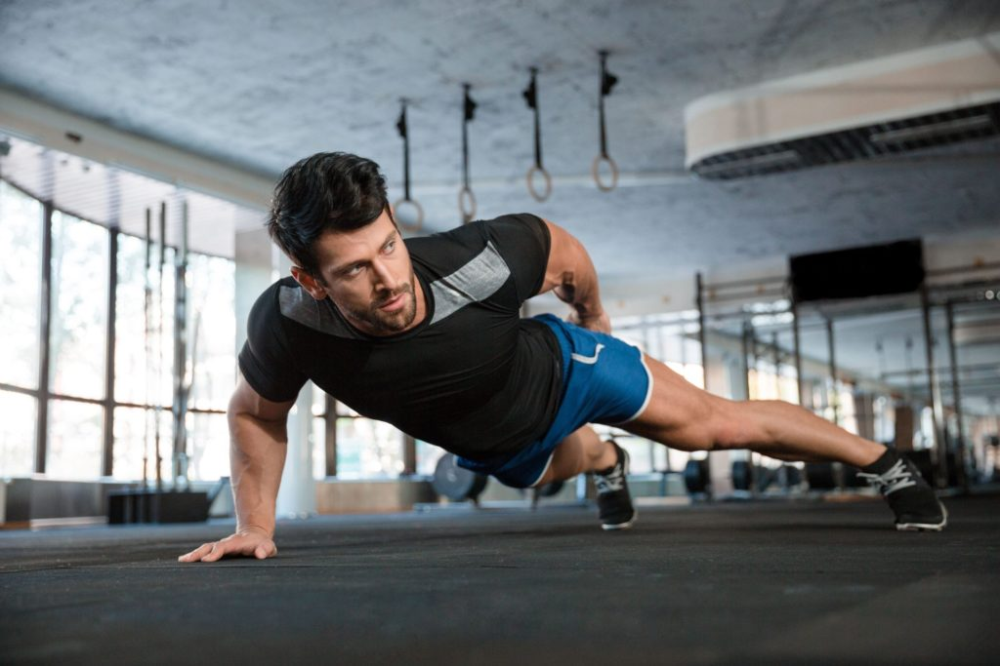
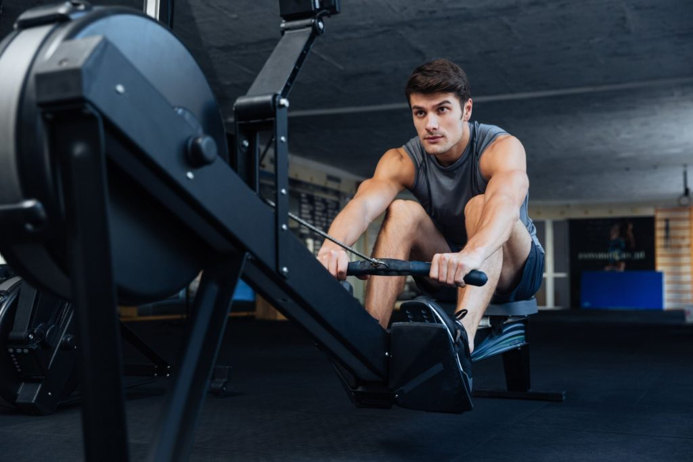

Pierwsza wizyta na siłowni może być bardzo stresującym doświadczeniem. Nowe miejsce, nowi ludzie i przede wszystkim ogrom możliwości. Zacząć od maszyn? Czy może lepiej wybrać się na strefę wolnych ciężarów? Jak ćwiczyć i jak się ubrać, żeby czuć się komfortowo? Pytania się mnożą, a odpowiedzi brak. Na szczęście z pomocą przychodzi poniższy tekst – z jego pomocą dowiesz się, jak zacząć ćwiczyć na siłowni, żeby za każdym razem wracać na nią z coraz większą dawką motywacji i chęci do progresowania.
Czego dowiesz się z tego wpisu?
- Jaką siłownię wybrać?
- Co wziąć na siłownię i jak się ubrać?
- O czym trzeba pamiętać w trakcie treningu?
W skrócie
Ćwiczenia na siłowni są świetnym sposobem na poprawę sylwetki i samopoczucia, dlatego też coraz więcej osób rozważa zakup pierwszego w życiu karnetu. Zanim jednak rzucimy się w wir treningów, warto poznać kilka podstawowych zasad, dzięki którym przygoda na siłowni będzie bezpieczna i przyjemna. W poniższym tekście znajdziesz odpowiedzi na pytania, które szczególnie często zadają sobie osoby początkujące.
Siłownia – jak zacząć i jaki klub wybrać?
Mnóstwo osób zastanawia się, jak zacząć ćwiczyć na siłowni, choć aktualnie odpowiedź na to pytanie wydaje się o wiele łatwiejsza niż kiedyś. Jeszcze kilka/kilkanaście lat temu siłownie kojarzyły się z miejscami kultu mięśni i testosteronu. To oczywiście bardzo dyplomatyczne stwierdzenie – realia były takie, że wielu amatorów te miejsca po prostu odstraszały. Wynikało to głównie z ich dużej niedostępności dla początkujących i niezbyt zachęcającego wyglądu czy lokalizacji. Stali bywalcy siłowni także nie przyczyniali się do zwiększania ich popularności i stanowili zwykle zamkniętą grupę „osiłków”. Na ile te twierdzenia można uznać za prawdziwe, a w jakim stopniu zakorzeniły się w świadomości jako szkodliwe stereotypy – to już temat na inną okazję. Istotne jest to, że obecnie sytuacja wygląda zgoła inaczej.
Siłownie to teraz miejsca przyjazne dla początkujących, doskonale wyposażone i funkcjonalne, w których możemy przeprowadzić trening dopasowany do naszych potrzeb i umiejętności. Największą popularnością cieszą się tzw. „sieciówki”, czyli sieci siłowni podpięte pod konkretną firmę, o ujednoliconych, wysokich standardach i atrakcyjnych ofertach abonamentowych. To właśnie takie miejsca są najbardziej polecane przez autorytety świata sportów siłowych i właśnie tam warto rozpocząć swoją przygodę z rekreacyjnym dźwiganiem ciężarów.

Jak się ubrać i co zabrać na siłownię?
Zanim wybierzemy się do klubu i po raz pierwszy chwycimy sztangę, warto zastanowić, co będzie nam potrzebne, aby trening był udany. Po pierwsze – odpowiedni strój na siłownię. Zaliczamy do niego:
- wygodne, szybkoschnące koszulki na siłownię – sportowe T-shirty lub koszulki typu longsleeve;
- krótkie sportowe spodenki lub dresy z krótką lub długą nogawką dla panów; z kolei dla pań najlepszym wyborem będą legginsy na siłownię (wybierać można spośród wielu fasonów i kolorów);
- sportowe buty na siłownię – dzięki zastosowaniu specjalnych materiałów przepuszczają powietrze i sprawiają, że nasze stopy są w stanie „oddychać”, a ponadto usztywniają kostkę i zabezpieczają przed kontuzjami;
- rękawiczki na siłownię – choć nie są konieczne, to warto rozważyć ich zakup, gdyż ochraniają dłonie przed odciskami, szczególnie, gdy korzystamy z większych ciężarów.
Podstawowa zasada brzmi: strój treningowy powinien być przede wszystkim komfortowy. W żadnym stopniu nie może krępować ruchów, musi być też na tyle lekki i przewiewny, żeby był w stanie odprowadzać nadmiar potu w trakcie intensywnego wysiłku. A co, gdy uda nam się już skompletować właściwy strój? Warto wówczas skupić się na akcesoriach na siłownię, takich jak m.in. torby na siłownię (najlepiej jak najbardziej pojemne), shakery do białka czy bidony na wodę lub napój izotoniczny. Ich dobór jest już jednak kwestią indywidualnego podejścia i osobistych preferencji.

Jak zacząć ćwiczyć na siłowni, czyli siłowniany savoir-vivre
Istnieje przynajmniej kilka uniwersalnych zasad, które powszechnie obowiązują na siłowniach – bez różnicy, czy mowa o sieciowych gigantach, czy osiedlowych klubach. Dzięki nim treningi odbywają się bez zbędnych zakłóceń i spięć. Oto kilka najważniejszych z nich:
- używaj jednego przyrządu/obciążenia naraz;
- korzystaj z ręcznika w trakcie używania poszczególnych przyrządów;
- dbaj o czystość przyrządów, z których korzystasz;
- odkładaj sprzętów na swoje miejsce
- nie przeszkadzaj innym ćwiczącym osobom (np. poprzez zasłonięcie lustra).
Niemniej jednak zdecydowanie najważniejsze jest dbanie o swoje zdrowie i dobre samopoczucie w trakcie ćwiczeń. Jeśli nie wiemy, jak poprawnie wykonać określone ćwiczenie, poprośmy o pomoc bardziej doświadczoną osobę. Odpowiednia technika jest w zasadzie kluczem do sukcesu. Bez niej nie tylko nie będziemy wiedzieć, jak ćwiczyć na siłowni i jak się na niej odnaleźć, lecz także narazimy się na kontuzje, które w dłuższej perspektywie czasu mogą być naprawdę groźne (szczególnie dla osób początkujących). Poprawna technika to nie tylko pamiętanie o spiętych łopatkach i pośladkach czy prostych plecach, lecz także szereg innych istotnych aspektów. Nie rzucajmy się więc na głęboką wodę, jeśli mamy wątpliwości odnośnie jakiegokolwiek ćwiczenia.
Skoro wiesz już, z czym wiąże się rozpoczęcie przygody na siłowni, koniecznie zajrzyj na sklepiguana.pl. Czeka tam na Ciebie bogata oferta sportowej odzieży i akcesoriów na siłownię. Skompletuj outfit i ruszaj na swój pierwszy trening!
Sprawdź także:
Jak dbać o higienę na siłowni?
Rękawiczki treningowe – jak wybrać? Zadbaj o dłonie na siłowni!
Autor tekstu: Szymon Anioł
Źródło zdjęć: shutterstock.com